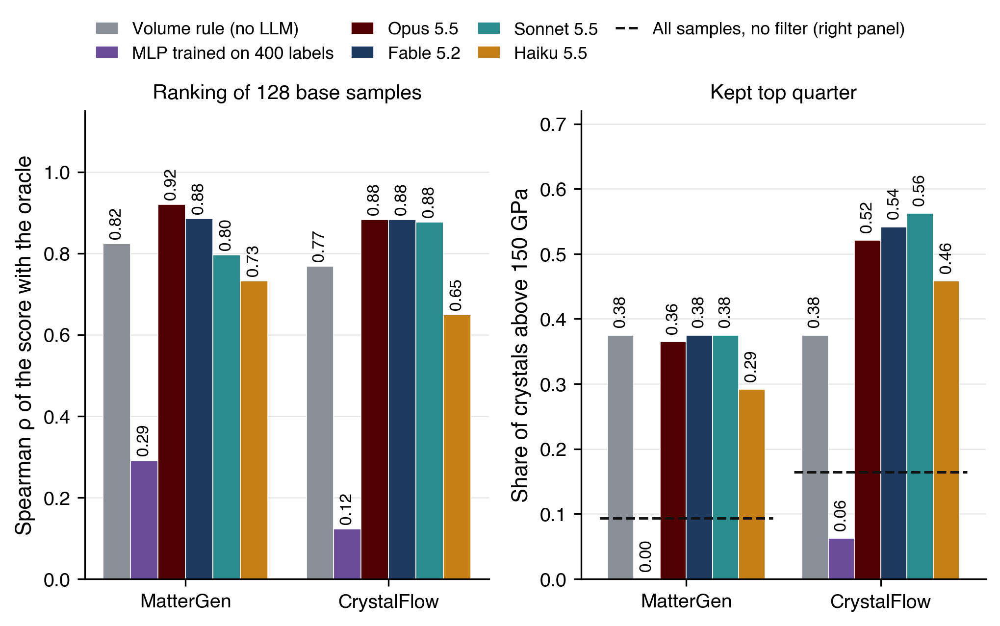

MATERIALS SCIENCE & ENGINEERING
TEXAS A&M UNIVERSITY
Department of Materials Science and Engineering
70

Bulk modulus, base samples
ρ, MatterGen / CrystalFlow
rule 0.82 / 0.77, MLP 0.29 / 0.12
Opus 0.92 / 0.88, Fable 0.88 / 0.88
Above 150 GPa, kept quarter
all 0.09 / 0.16; Opus 0.36 / 0.52